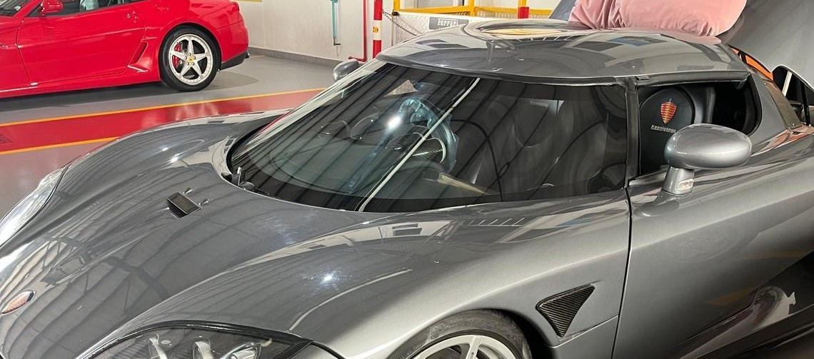

Custom Vintage Car & Boat Screens & Side Glass
Custom glass for vintage cars and boats is manufactured to match original specifications while meeting modern
safety and performance standards. Each piece is carefully shaped and finished to suit classic and specialised
vehicles, preserving authenticity without compromising durability.
These custom glass solutions are ideal for restoration projects and bespoke applications where accuracy, clarity, and fitment are critical.
- Suitable for classic and vintage vehicles, boats, and custom-built applications.
- Manufactured to precise templates or original patterns for accurate fitment.
- Available in flat or curved glass depending on vehicle design.
- Can be supplied in clear, tinted, or laminated safety glass options.
- Designed to maintain the original appearance while improving strength and safety.
Northern Hardware & Glass (Pty) Ltd.
If you would like to request a quote or more information, please contact us.
Contact Us